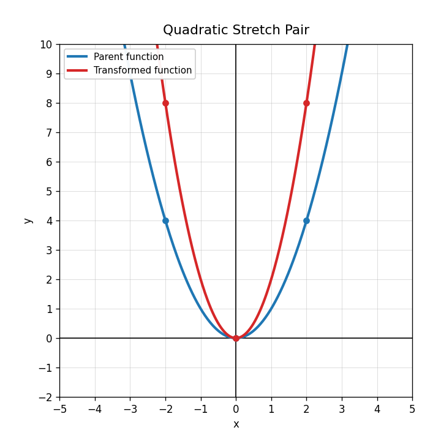
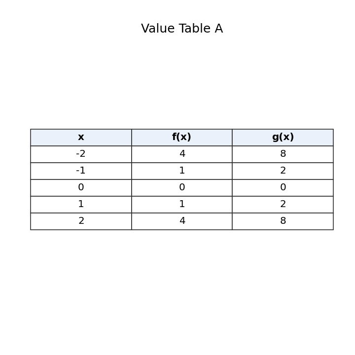

Which equation represents a reflection of $f(x)$ across the $x$-axis?
For $g(x)=3f(x)$, identify the transformation as a vertical stretch, vertical compression, or reflection.
Use the graph pair. Describe how the transformed function compares to the parent function.

Use Value Table A. What transformation appears to change $f(x)$ into $g(x)$?

What transformation is shown by $g(x)=f(x)-4$?
What transformation is shown by $g(x)=f(x+2)$?
If the point $(1,5)$ on $f(x)$ is shifted left 3 units, what is the new point?
In $g(x)=(x-6)^2$, what value tells you the horizontal shift?
Complete the table for $g(x)=(x+1)^2-2$.
| $x$ | -3 | -2 | -1 | 0 | 1 |
|---|---|---|---|---|---|
| $g(x)$ |
Explain why $f(x-4)$ shifts a graph right, even though the expression contains a minus sign.
A student says $f(x)+7$ and $f(x+7)$ move the graph in the same direction. Critique the statement.
Create an equation for a translated absolute-value function with vertex at $(2,-5)$. Explain how your equation shows the translation.
Classify the function family: $y=x^2$.
Classify the function family: $y=|x|$.
A graph has one endpoint and curves slowly upward. Which parent family is most likely? Explain briefly.
Give one feature that helps distinguish a quadratic graph from an absolute-value graph.